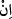

Mecîd olan Allah taleb ehline
Mürîd ismi ile tecellî etmeseydi
Mürîd ismiyle kimse mevsûf olmaz
Muhabbet ile tanınmazdı
167, 168, 169. Putperestler: Eğer öncekilere verilenlerden bizde de bir kitap
olsaydı, mutlaka Allah’ın ihlâslı kulları olurduk! diyorlardı.
“Putperestler: Eğer öncekilere verilenlerden” Tevrat ve İncil gibi kitaplardan
“bizde de bir kitap olsaydı, mutlaka Allah’ın ihlâslı kulları olurduk!” yani ona ihlasla
ibadet eder, onların muhalefet ettikleri gibi biz muhalefet etmezdik “diyorlardı.”
Buradaki “” edatı “”den tahfif edilmiştir. Şe’n zamiri mahzuftur. “
kelimesindeki “ ” ise bu tahfif edilen “” ile nefiy mânâsında olan “” edatının alâmet-
” ise bu tahfif edilen “” ile nefiy mânâsında olan “” edatının alâmet-
i farikasıdır. Böyle tahfif edilen “” ile te’kid lâmı getirmek, bu sözü söyleyen
müşriklerin sözlerinde ciddi ve kararlı olduklarına işaret etmek içindir. İşte işin başında
ve sonunda onların halinin nasıl olduğunu görmek ve düşünüp ibret almak gerekir. Diğer
bir ifadeyle, eğer bizim yanımızda öğüt ve nasihat veren bir kitap olsaydı, Allah’ın
ihlasa ermiş kullarından olurduk, demektir.
170. İşte şimdi onu inkâr ettiler. Ama ileride bileceklerdir!
“İşte şimdi onu” Kur’an’ı “inkâr ettiler.” Kur’an ve kendisine indirilen zat hakkında
dediklerini dediler. “Ama ileride” inkarlarının sonucu olan dünya mağlubiyetini ve
ahiretteki büyük azâbı “bileceklerdir!”
Buradaki “ ” harfi, fâ-i fâsiha’dır. Bu onlara yapılan bir tehdittir. Bu kavl-i ilâhîde
” harfi, fâ-i fâsiha’dır. Bu onlara yapılan bir tehdittir. Bu kavl-i ilâhîde
şuna işaret edilmektedir: İnsanın en alt tabakaya düşmesi ve sûreti mânâya tatbik
etmeksizin davanın kişiyi götüreceği nokta, dünya ve ahirette rezil ve rüsvaylık ile kahır
ve celaldir. Yüce, kerim ve melik olan Allah Teâlâ bizleri bu duruma düşmekten
korusun.
Bazıları der ki, sufiyyenin büyüklerinden Melamiyye tarikatına mensup olanlar,
farzları mümkün olan en kâmil mânâda eda ettiler de bir de fazlalık olarak nâfile
kılıyorlar gibi anlaşılacağı endişesiyle farzlarla beraber yalnız müekked sünnetleri